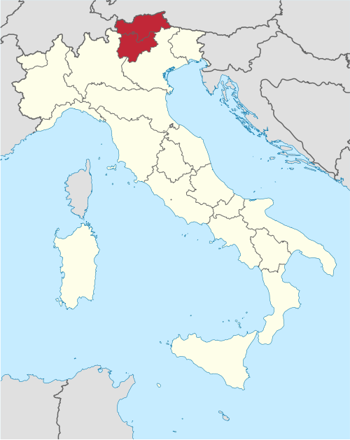
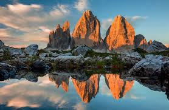
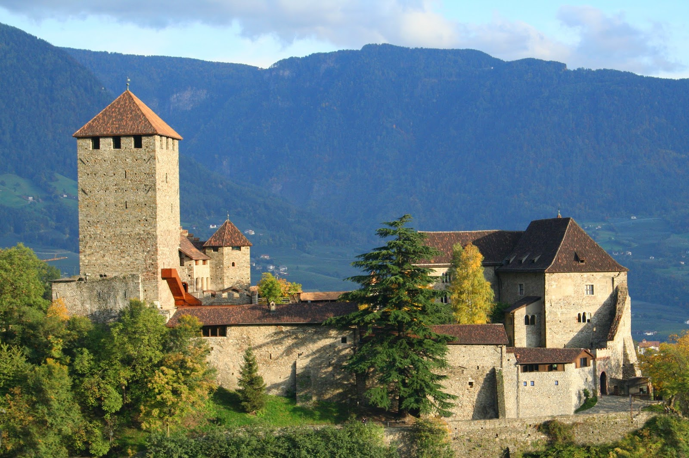
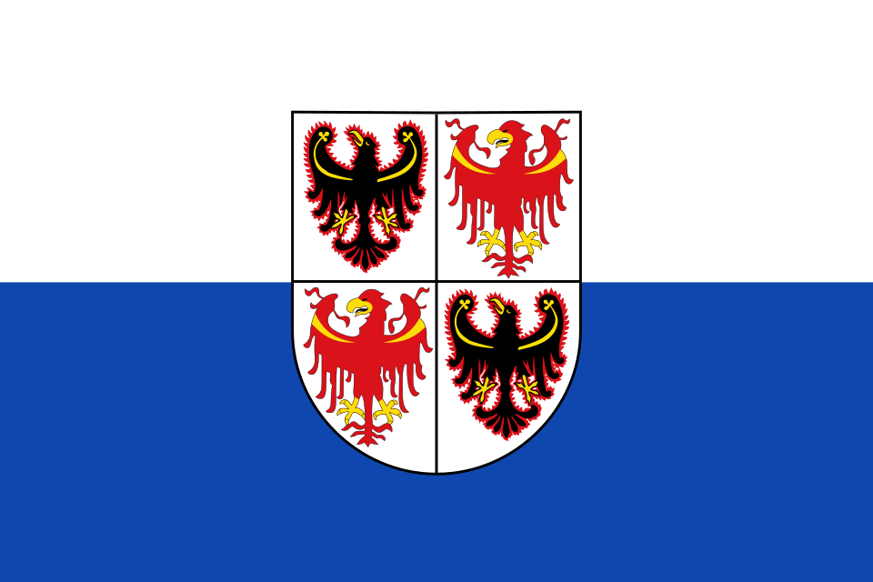
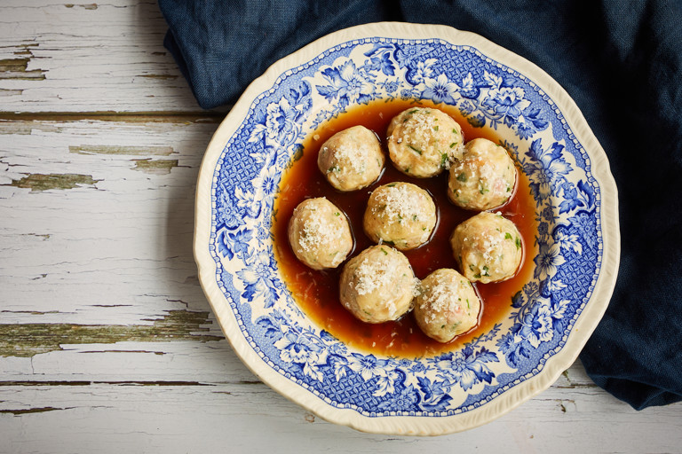
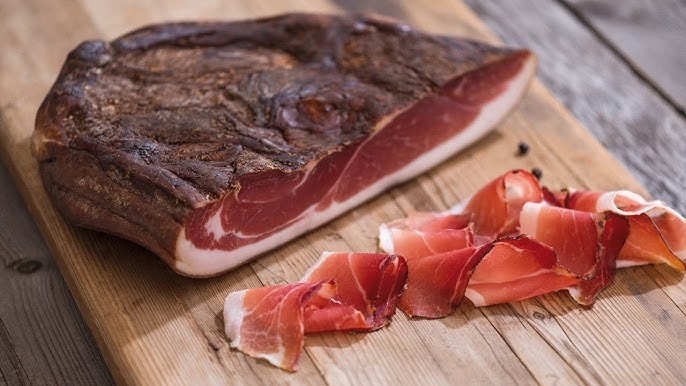
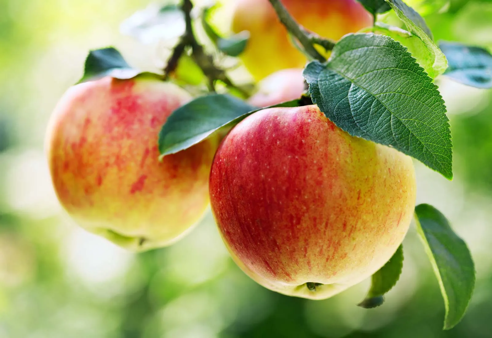
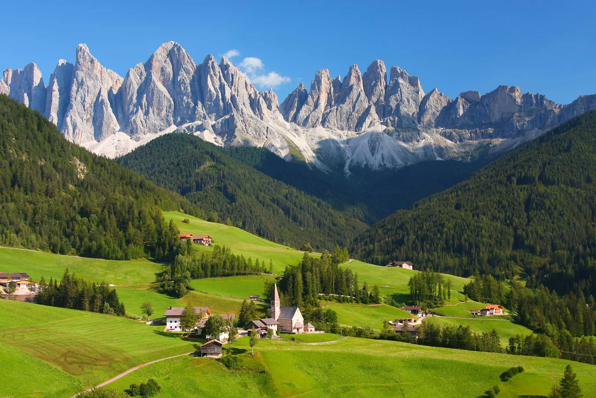

Northeastern Italy in the Alps, bordering Austria
Trento and Bolzano
Dramatic Dolomite mountains, valleys, and forests
Italian, German, and Ladin
Speck, canederli, apple strudel, and Alpine cuisine
Dolomites, skiing, and German-Italian cultural fusion

Trentino-Alto Adige is a mountainous region in northern Italy, located entirely within the Alps and bordering Austria and Switzerland. which gives the region a strong mix of Italian and German-speaking cultural influences. In addition, it is bordered by the Italian regions of Lombardia to the west and Veneto to the south and southeast.
The region is made up of two autonomous provinces: Trentino and Bolzano (often called South Tyrol or Alto Adige)
Capitals: Trento (capital of the Trentino province) and Bolzano (capital of the South Tyrol or Alto Adige province)
The climate of Trentino-South Tyrol ranges from continental to an alpine one. In general, rainfall is highest in the south and west, and decreases towards the north and east as the Alps act as a natural barrier to the rains. In South Tyrol rain is heaviest in the summer; in Trentino rainfall peaks in spring and autumn. Winter everywhere is the driest month. Snow is prevalent in winter, but is more abundant in the mountains.
Summers are hot, and heat waves can occur in the lower valleys. Winters are harsh. In South Tyrol, and in the higher mountain areas, temperatures drop considerably below freezing, and these are among the coldest areas of Italy. In other areas the winters are also harsh, but the protective effect of the mountains and the mitigating effect of Lake Garda considerably dampens the force of winter.
Because of its altitude and terrain, Trentino-Alto Adige has a varied climate. The valleys tend to have milder temperatures and are suitable for fruit farming, especially apples and vineyards, while higher elevations are much colder and snowy for most of the year. This mix of geography makes the region important for both agriculture and tourism, especially skiing and hiking.
Trentino-Alto-Adige's geography is dominated by high mountain ranges, deep valleys, and important Alpine passes that have historically connected Italy to Central Europe. The region is shaped by major mountain groups such as the Dolomites in the east and the Ortler Alps in the west. These dramatic landscapes feature jagged peaks, glaciers, and wide forested areas, making it one of the most mountainous and scenic parts of Italy. The Adige River is the main river running through the region, carving out valleys that support towns, agriculture, and transportation routes.
Inhabited in the 2nd century BC by the Reti people, a small community of shepherds and farmers, the territory of Trentino was part of the Prince-Bishopric of Trento for almost eight centuries.
Dozens of Prince-Bishops succeeded one another, with Bernardo Clesio in particular restructuring the city and the Principality.
From 1545 to 1563, the restructuring of the Catholic Church was decided here, at the three sessions of the Council of Trent.
Having passed under the control of Austria, Trentino returned to Italy at the end of the First World War with the Treaty of Versailles of 28 June 1919.
Today, it is one of the most popular regions for mountain lovers, with its slow pace, sports and unique views that only mountain passes can offer, such as the Rolle Pass in the Dolomites.
As of 2026, the total population of Trentino-Alto-Adige is 1.09 million people.
The region covers an area of 13,605 km² and a population density of 80.18/km².
Trento, the capital of Trentino-Alto-Adige, is best known for its rich history, Alpine setting, and role in the Council of Trent, a major event in Catholic history during the 16th century. The city combines Italian and Austrian influences, visible in its architecture, culture, and language traditions. Surrounded by mountains and located along the Adige River valley, Trento is also known today for its high quality of life, universities, and as a gateway to the Dolomites.
Population: 119,359 people
Bolzano is known for its unique blend of Italian and Austrian (German-speaking) culture, reflecting its position in the heart of the Alps. The city is famous for its picturesque historic centre, Alpine scenery, and strong cultural identity that combines both Mediterranean and Central European influences. It is also best known as the home of Ötzi the Iceman, a well-preserved prehistoric mummy discovered in the nearby mountains, which is displayed in the South Tyrol Museum of Archaeology.
Population: 106,901 people
Merano is known as a historic spa town in South Tyrol, famous for its mild climate, elegant architecture, and surrounding Alpine scenery. It became popular in the 19th century as a health and wellness destination, attracting visitors to its thermal baths and promenades along the Passer River. Today, Merano is also recognized for its gardens, vineyards, and blend of Italian and Austrian cultural influences.
Population: 41,658 people
Rovereto is known for its strong cultural and historical identity, especially its role during World War I due to its location near former front lines in the Alps. Today, it is most famous for the MART Museum of Modern and Contemporary Art, one of Italy's most important modern art museums, which highlights the city's artistic and cultural focus. Rovereto also combines historical heritage with a lively cultural scene, set in a scenic valley surrounded by mountains.
Population: 40,513 people

The Tre Cime di Lavaredo are one of the most famous natural landmarks in the Dolomites and a symbol of Trentino-Alto Adige's dramatic Alpine landscape. Known for their three distinctive rocky peaks, they attract hikers, climbers, and photographers from around the world. The area is especially popular for its scenic trails and breathtaking views, making it one of the most recognizable mountain settings in Italy.

Castel Tirolo is a historic medieval castle located above the town of Merano, offering panoramic views of the surrounding valleys and mountains. It was once the seat of the Counts of Tyrol and played an important role in the region’s political history. Today, it serves as a museum that showcases medieval life and the cultural heritage of South Tyrol, blending history with its stunning Alpine setting.

The flag of Trentino-Alto Adige consists of a coat of arms, containing two eagles of San Venceslao (Trentino) and two Tyrolean red eagles (Alto Adige), historical symbols of the two provinces, which stand out against a white and blue background. The shape of the flag is a rectangle with a framed heraldic shield on it.
The flag was officially adopted on Juen 12th, 1975.
The flag of Trentino-Alto Adige / Südtirol is a visual testament to the region's unique cultural blend. It features a white and blue banner with a central coat of arms that unites the heraldry of its two autonomous provinces: Trento and Bolzano/South Tyrol.
In the province of Trento, Italian is dominant, while in South Tyrol (Bolzano), German is the majority language. This reflects the region's history, as it was once part of the Austro-Hungarian Empire before becoming part of Italy after World War I.
In addition to Italian and German, a small minority also speaks Ladin, an ancient Rhaeto-Romance language spoken in some Dolomite valleys. Because of this linguistic diversity, public signs, schools, and government services are often provided in multiple languages, making the region one of the most linguistically unique areas in Italy.
Trentino-Alto Adige is known for its Alpine cuisine, which blends Italian and Austrian influences due to its history and location in the Alps. The food is typically hearty and mountain-based, featuring ingredients like potatoes, cheese, bread, and smoked meats that suit the colder climate.
The region is especially famous for dishes such as dumplings (canederli), speck (smoked cured ham), and apple strudel, along with strong local wines and apples grown in the valleys. Overall, its cuisine is known for being simple, filling, and deeply connected to mountain traditions.

Canederli are traditional bread dumplings made from stale bread mixed with milk, eggs, and speck or cheese, then boiled and served in broth or with melted butter. They are one of the most iconic comfort foods of Trentino-Alto Adige and reflect the region’s Alpine, hearty cooking style. This dish was originally created as a way to avoid wasting leftover bread.

Speck Alto Adige is a famous smoked and lightly cured ham from South Tyrol, known for its rich flavour and balance between smoky and savoury taste. It is traditionally air-dried in the mountain climate, which gives it its unique texture and aroma. Speck is often eaten in slices with bread, cheese, or used in local recipes like dumplings and pasta.
Strudel di mele is a classic apple strudel made with thin pastry filled with apples, raisins, cinnamon, and sugar. It is one of the most beloved desserts in the region, showing strong Austrian influence in its culinary tradition. Often served warm with powdered sugar, it is especially popular in mountain cafés and bakeries.

Trentino-Alto Adige is one of the most important apple-producing regions in Europe, with vast orchards spread across the valleys around Bolzano and Trento. Thanks to the cool Alpine climate, clean air, and fertile soil, the region produces high-quality apples known for their crisp texture and variety of flavours. Apple farming is not only a major part of the local economy but also a defining feature of the landscape, with rows of orchards shaping much of the valley scenery.

The Dolomites are one of the most iconic cultural and artistic symbols of Trentino-Alto Adige, known for their dramatic peaks and constantly changing light that has inspired painters, photographers, and filmmakers. Their unique pale rock formations create striking colours at sunrise and sunset, a phenomenon known as "enrosadira," which has become a major subject in landscape art and photography. Beyond visual arts, the Dolomites also shape local cultural identity, appearing in folklore, literature, and traditional mountain life, making them both a natural wonder and a cultural symbol of the region.
Daniele Groff is an Italian singer-songwriter from Trentino-Alto Adige, known for his pop-rock style and early 2000s success in the Italian music scene. He gained attention with his debut album Days Are Not the Same and became known for melodic, radio-friendly songs that brought him national recognition. While not a global star, he remains one of the more notable contemporary artists connected to the region.
Want to learn more about Trentino-Alto Adige? Watch this video to explore its landscapes, history, culture, and traditions.
Watch the video →